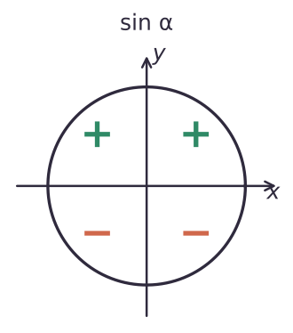
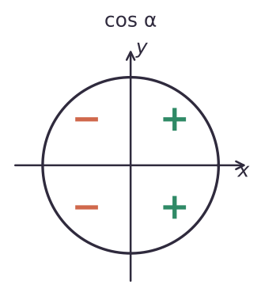
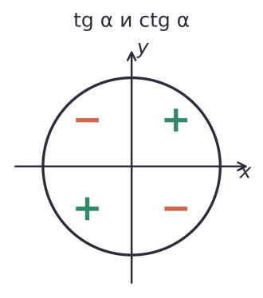
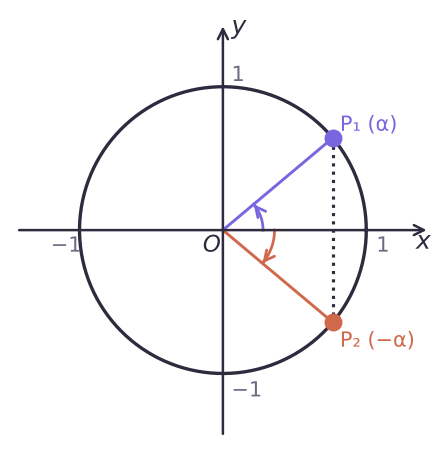

Теория
Угол какой четверти
Если после поворота точки P₀(1; 0) на угол α точка P оказалась в I координатной четверти, говорят, что α — угол I четверти. Так же определяют углы II, III и IV четвертей. Например, π/3 и −300° — углы I четверти, 2π/3 и −185° — II, 4π/3 и −96° — III, 355° и −π/6 — IV.
Углы вида πk/2 (0, π/2, π, 3π/2, …) — это точки на осях, они ни к какой четверти не относятся.
Знаки синуса и косинуса
Синус — ордината точки, косинус — абсцисса. Поэтому знаки читаются прямо с координатной плоскости:
- I четверть: x > 0, y > 0 — sin > 0, cos > 0;
- II четверть: x < 0, y > 0 — sin > 0, cos < 0;
- III четверть: x < 0, y < 0 — sin < 0, cos < 0;
- IV четверть: x > 0, y < 0 — sin < 0, cos > 0.
Знаки тангенса и котангенса
tg α = sin α/cos α и ctg α = cos α/sin α: частное положительно, когда знаки одинаковые (I и III четверти), и отрицательно, когда разные (II и IV).



Чтобы определить четверть угла, сначала отбрось полные обороты. Угол 400° — это не «больше 360°, значит, IV четверть», а 360° + 40° — I четверть. Для радиан полезно помнить: π/2 ≈ 1,57, π ≈ 3,14, 3π/2 ≈ 4,71, 2π ≈ 6,28.
Чётность и нечётность
Сравним точки P₁ и P₂, полученные поворотами на α и на −α. Это зеркальные отражения друг друга в оси Ox: абсциссы у них одинаковые, а ординаты противоположные.

Для любого α: cos(−α) = cos α, sin(−α) = −sin α. Значит, косинус — чётная функция, синус — нечётная.
Для тангенса и котангенса: tg(−α) = sin(−α)/cos(−α) = −sin α/cos α = −tg α, аналогично ctg(−α) = −ctg α. Их области определения симметричны относительно нуля, поэтому тангенс и котангенс — нечётные функции.
Это позволяет избавляться от «минуса» в аргументе: cos(−π/3) = cos π/3 = 1/2, sin(−π/6) = −1/2, tg(−π/4) = −1.
«Минус выносится» только у нечётных функций: sin, tg, ctg. У косинуса минус в аргументе просто исчезает: cos(−α) = cos α, а не −cos α.
Разбор примеров
Определи знак: а) sin(−280°); б) cos 340°; в) tg 2; г) cos 4.
- а) −280° = −360° + 80°: угол I четверти, sin(−280°) > 0;
- б) 340° — IV четверть, косинус там положителен: cos 340° > 0;
- в) π/2 ≈ 1,57 < 2 < 3,14 ≈ π — II четверть, тангенс отрицателен: tg 2 < 0;
- г) π ≈ 3,14 < 4 < 4,71 ≈ 3π/2 — III четверть: cos 4 < 0.
Сравни sin 200° и sin(−200°).
200° — угол III четверти, значит, sin 200° < 0. −200° = −360° + 160° — угол II четверти, sin(−200°) > 0. Поэтому sin 200° < sin(−200°). (Иначе: по нечётности sin(−200°) = −sin 200° > 0.)
Вычисли: cos(−π/3) + 2sin(−π/6) − tg(−π/4).
cos π/3 − 2sin π/6 + tg π/4 = 1/2 − 1 + 1 = 1/2.
Исследуй на чётность: а) f(x) = 1 + sin x; б) g(x) = x² cos x; в) h(x) = sin x / cos x.
а) D = R. f(−x) = 1 − sin x. Это не равно ни f(x), ни −f(x): например, f(π/2) = 2, f(−π/2) = 0. Ни чётная, ни нечётная.
б) D = R. g(−x) = (−x)² cos(−x) = x² cos x = g(x) — чётная.
в) D: x ≠ π/2 + πk — симметрична. h(−x) = −sin x/cos x = −h(x) — нечётная.
α — угол III четверти. Упрости |sin α| + sin α.
В III четверти sin α < 0, поэтому |sin α| = −sin α, и выражение равно 0.
Задачи урока
Реши в тетради. Ответы разберём на занятии.
Из учебника
- № 19.1, 19.2 — Знак значения тригонометрической функции.
- № 19.3, 19.4 — Вычисления с отрицательными углами.
- № 19.7 — Сравнение значений.
- № 19.9 — Упрощение выражений с модулем.
- № 19.13 — Исследование функций на чётность.
Тест к уроку
Домашнее задание
№ 19.2, 19.4, 19.8, 19.10, 19.14 (1) из учебника письменно. Нарисовать три единичные окружности со знаками sin, cos и tg по четвертям.